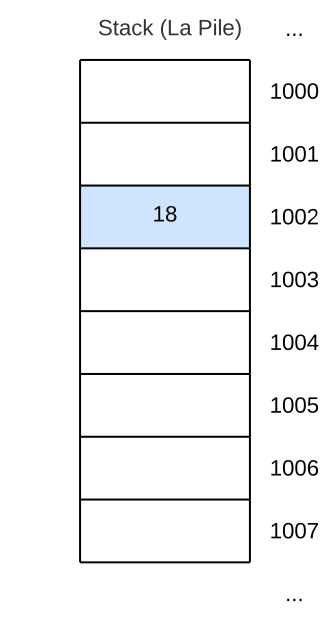

▶︎ C03 - Variables et Constantes
Programmation C++
BTS CIEL 1ere année
Lycée Louis Rascol, Albi
Release : v1.0 (11.09.23)📧 joris.serrand@rascol.net 🐙 Github : ciel-ir-rascol/cpp-cours

Qu'est ce qu'une variable ?
- Une variable est stockée dans la RAM (Random Access Memory)
- La mémoire est divisée en cellules, chaque cellule contient 8bits a une adresse unique.
Sans variable on devrait spécifier tout le temps les adresses en mémoire :
Pseudo code :
Qu'est ce qu'une variable ?
- Grâce au binding (liaison) il inutile de retenir l'adresse de la case mémoire, le compilateur s'occupe de tout
- Un nom est associé à une adresse en mémoire, dans notre cas
ageest associé à la case1002
On utilisera donc ce genre d'expressions :
Pseudo code :

Qu'est ce qu'une variable ?
- Une variable est une abstraction pour une place en mémoire.
- Ça permet aux programmeurs d'utiliser des noms avec du sens et non une adresse.
- Les variables ont :
- Un type : leur catégorie (Entier, Nombre Réel, Chaîne de caractère ...)
- Une valeur : leur contenu (42, 1.1618, "Hubert")
- La valeur d'une variable peut changer
- Les variables doivent être déclarées avant d'être utilisées
Déclarer une variable
Syntaxe
Exemples
Règles pour nommer une variable
- Peut contenir des lettres, des nombres et des underscores
_ - Doit commencer par une lettre
- Interdiction d'utilisée des mots réservés (Mot clés, autres identifiants)
- Interdiction de re-déclarer une variable dans le même scope
- Une variable déclarée dans une fonction ne peut être redéclarée
Exemples
int test; // 🟢 OK
int 2test; // 🔴 ERREUR Interdiction de commencer un nom par un chiffre
int cout; // 🔴 ERREUR L'identifiant cout est réservé
int test-2; // 🔴 ERREUR '-' non autorisé dans un nom de variable

Nommage de variables, les bonnes pratiques
- Soyez réguliers avec votre convention de nommage :
- Camel Case :
maVariable - Snake Case :
ma_variable Kebab Case et Pascal Case- Commencez par une minuscule → 1ere lettre majuscule = Classe
- Utiliser des noms qui ont un sens
- Déclarez-les proche de l'endroit ou vous en avec besoin
Initialiser une variable
C++ Propose 3 manières d'initialiser une variable :
int age; // ⚠️ age n'est pas initialisée
int age = 18; // Style C initialisation
int age (18); // Initialisation avec constructeur
int age {18}; // 👍 List Initialization (À partir de C++11)
‼️ N'utilisez jamais les variables avant de les avoir initialisées
Les variables globales
▶︎ Une variable globale peut être utilisée dans toutes les fonctions du programme. Une variable globale se déclare au début du code, hors de toute fonction
int variableGlobale = 0; // Cette variable peut s'utiliser dans toutes les fonctions
int main(){
int variableLocale = 0; // Cette variable est utilisable que dans le main
std::cout << variableGlobale << std::endl;
}
Les caractères
Utilisés pour représenter les caractères : 'A', 'a', '2' ...
| Type | Taille |
|---|---|
char |
1 octet = 8 bits |
char16_t |
2 octets = 16 bits |
char32_t |
4 octets = 32 bits |
wchar_t |
S'adapte au système d'encodage |
ℹ️ le type char est suffisant pour encoder tous les caractères du code ASCII

Les entiers
Utilisés pour encoder des nombres entiers relatifs
|Type|Taille|Intervalle de valeurs|
|---|---|:---:|
|short int| 2 octets | \([-32\ 768 ; 32\ 767]\)|
|int| 4 octets (arch64) | \([-2\ 147\ 483\ 648 ; 2\ 147\ 483\ 647]\)|
|long int| 8 octets| \([-9.223\times10^{18};9.223\times10^{18}]\)|
|unsigned short int| 2 octets|\([0 ; 65\ 535]\)|
|unsigned int| 4 octets|\([0 ; 4\ 294\ 967\ 295]\)|
|unsigned long int| 8 octets|\([0;1.8447\times10^{19}]\)|
ℹ️ signed → Négatif et Positif ; unsigned → Uniquement positif
Les réels (nombres à virgule flottante)
Utilisés pour représenter des nombres à virgule
|Type|Taille|Précision|Intervalle de valeurs|
|---|---|---|---|
|float|4 octets| minimum 6 chiffres significatifs|\([−3.4028\times10^{38};3.4028\times10^{38}]\)
Plus petit positif : \(1.4013\times10^{-45}\)
Plus petit négatif : \(-1.4013\times10^{-45}\)|
|double|8 octets| minimum 10 chiffres significatifs|\([−1.7977\times10^{308};1.7977\times10^{308}]\)
Plus petit positif : \(4.9407\times10^{-324}\)
Plus petit négatif : \(-4.9407\times10^{-324}\)|
|long double|10 octets| minimum 10 chiffres significatifs|\([−1.1897\times10^{4932};1.1897\times10^{4932}]\)
Plus petit positif : \(3.3621\times10^{-4932}\)
Plus petit négatif : \(-3.3621\times10^{-4932}\)|
Les Booléens
Utilisés pour représenter 1bit : 0 → false ou 1 → true
|Type|Taille|
|---|---|
|bool|1 octet|
ℹ️ Bien que la donnée à mémoriser ne soit que d'1 bit, la place en mémoire d'un booléen en C++ est de 1 octet pour éviter les problèmes d'alignement avec les autres variables.
Exemples de déclarations avec initialisation
// Déclaration et initialisation d'entiers
int populationFrance {68'042'591};
int populationAlbi {49094};
' servent à améliorer la lisibilité d'un grand nombre, ⚠️ Ce n'est utilisable qu'à partir du C++14.
// Déclaration et initialisation de caractères
char uneLettre {'A'};
char unChiffre {'9'}; // Le caractère '9', pas l'entier !
Exemples de déclarations avec initialisation
// Déclaration et initialisation de flottants
float soldeCompte {2342.56};
double pibFrance {3.677579e15};
e sert à faire une puissance de 10 : e15 = \(10^{15}\)
// Déclaration et initialisation d'un booléen
bool etatBp {true};
cout << "Etat du Bouton Poussoir : " << etatBp << endl;
// 🖥️ Etat du Bouton Poussoir : 1
bool etatCapteur {false};
cout << "Etat du Capteur : " << etatCapteur << endl;
// 🖥️ Etat du Capteur : 0
Gestion des erreurs de dépassement
L'utilisation d'une list initialization {} pour une initialisation de variable permet de lever une erreur quand le contenu ne rentre pas dans la variable choisie. Ce que ne fait pas l'opérateur d'affectation style C =
short int populationFrance = 68'042'591; // Initialisation C Style
cout << populationFrance << endl;
// 🖥️ 16223
short int ne peut contenir 68 042 591 !
short int populationFrance {68'042'591};
cout << populationFrance << endl; // List Initialization
// 🔴 ERROR: constant expression evaluates to 68042591 which cannot be narrowed to type 'short'
Connaître la taille d'un type et d'une variable
C++ fournit une fonction appelée sizeof() permettant de connaitre la taille d'une variable ou d'un type :
valeur fait 8 octets
Connaître les limites et la précision
C++ dans la bibliothèque climits fournit les constantes : INT_MIN, INT_MAX, CHAR_MIN...
Pour les flottants c'est la bibliothèque cfloat qu'il faut inclure :
#include <iostream>
#include <climits> // Inclusion bibliothèque climits
#include <cfloat> // Inclusion bibliothèque cfloat
using namespace std;
int main() {
cout << INT_MIN << endl; // 🖥️ -2147483648
cout << FLT_DIG << endl; // 🖥️ 6
return 0;
}
Qu'est ce qu'une constante ?
Comme les variables les constantes :
- Ont un nom
- Occupe un espace en mémoire
- Sont typées
Mais, leurs valeurs ne peuvent pas changer durant l'exécution du programme !
Déclarer une constante
Utilisation du mot clé const :